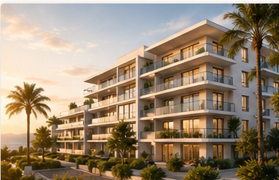
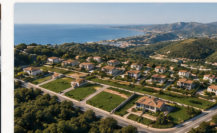
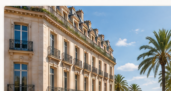
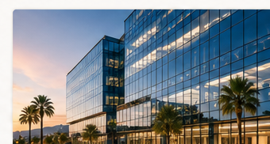
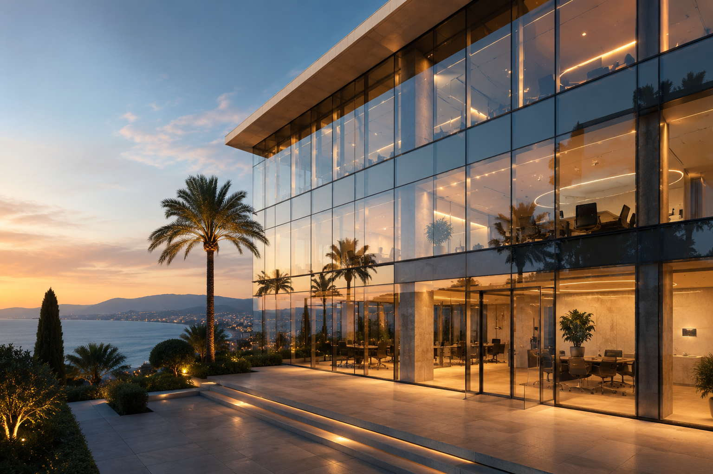

VEFA
Montage et sécurisation juridique des ventes en l’état futur d’achèvement : résidentiel, tertiaire ou mixte.
Expertise immobilière
Un accompagnement juridique sur mesure pour sécuriser et valoriser vos opérations immobilières complexes, de la conception du projet jusqu’à sa réalisation.
L’Office Notarial de Cagnes-sur-Mer accompagne les professionnels de l’immobilier, les promoteurs, marchands de biens, investisseurs et institutionnels dans la sécurisation juridique et fiscale de leurs opérations.
Nous intervenons à chaque étape de vos projets, de la conception à la réalisation, avec une approche réactive, structurée et adaptée aux enjeux opérationnels.
Nos domaines d’intervention
L’office intervient sur les principales problématiques liées au montage, à la commercialisation et à la sécurisation des opérations immobilières d’envergure.

Montage et sécurisation juridique des ventes en l’état futur d’achèvement : résidentiel, tertiaire ou mixte.
Mise en place d’opérations en Bail Réel Solidaire : rédaction des actes, conventionnements et sécurisation.
Constitution et suivi de Sociétés Civiles de Construction-Vente et autres structures dédiées.

Autorisations d’urbanisme, règlements juridiques, cahiers des charges et actes de vente des lots.
Ingénierie juridique sur mesure pour des opérations d’aménagement, de construction ou d’investissement.

Accompagnement des cessions d’immeubles entiers ou de portefeuilles immobiliers.

Sécurisation des acquisitions complexes et structuration d’opérations sur mesure.
Conseil stratégique, suivi juridique et fiscal à chaque étape de vos programmes.
Notre valeur ajoutée
Les opérations de promotion immobilière exigent une parfaite coordination entre les contraintes juridiques, fiscales, urbanistiques, financières et commerciales.
L’office vous accompagne avec une approche pragmatique et sécurisée, en veillant à la cohérence de vos montages et à la protection de vos intérêts.

Une méthode structurée
Analyse du foncier, de l’urbanisme, des servitudes, des contraintes contractuelles et des conditions d’acquisition.
Choix des structures, constitution de SCCV ou SCI, organisation des garanties et sécurisation des partenaires.
Rédaction des actes, VEFA, conditions suspensives, échéanciers, garanties financières et documentation client.
Accompagnement jusqu’à la signature, la livraison, les formalités postérieures et la sécurisation finale de l’opération.